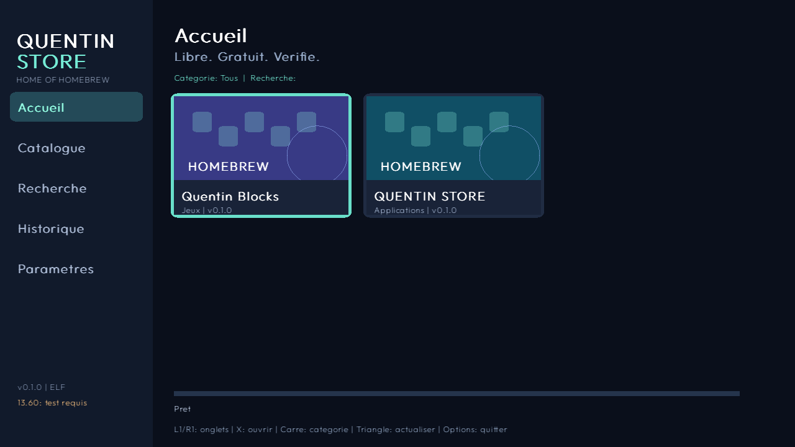

Explorez
Catalogue JSON, recherche, catégories, fiches et illustrations intégrées. Interface sombre et navigation DualSense.
HOME OF HOMEBREW · PS5
Découvrez et téléchargez des homebrews libres depuis votre console. Une application native en C++, gratuite et ouverte.
Version 0.1.1 expérimentale · ELF compilé · exécution PS5 13.60 à confirmer
LIBRE. GRATUIT. VÉRIFIÉ.
PENSÉ POUR LA MANETTE
Catalogue JSON, recherche, catégories, fiches et illustrations intégrées. Interface sombre et navigation DualSense.
HTTPS avec certificats vérifiés, progression, reprise HTTP Range et contrôle SHA-256 avant validation.
Historique local et mises à jour vérifiées. Lancement manuel via ELF Loader. Aucune télémétrie.
L’APPLICATION EN IMAGES

PREMIÈRE INSTALLATION
PS5 déjà jailbreakée, ELF Loader compatible actif sur le port 9021. QUENTIN STORE n’effectue pas le jailbreak.
Le firmware 13.60 est une cible à tester. ShadowMountPlus n’est pas utilisé pour installer ce payload. Aucun PKG n’est fourni.
quentin-store.elf.VERSIONS DISPONIBLES
QUENTIN STORE et Quentin Blocks, jeu original sous GPL-3.0-or-later.